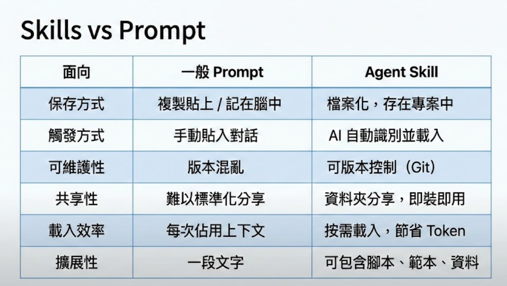
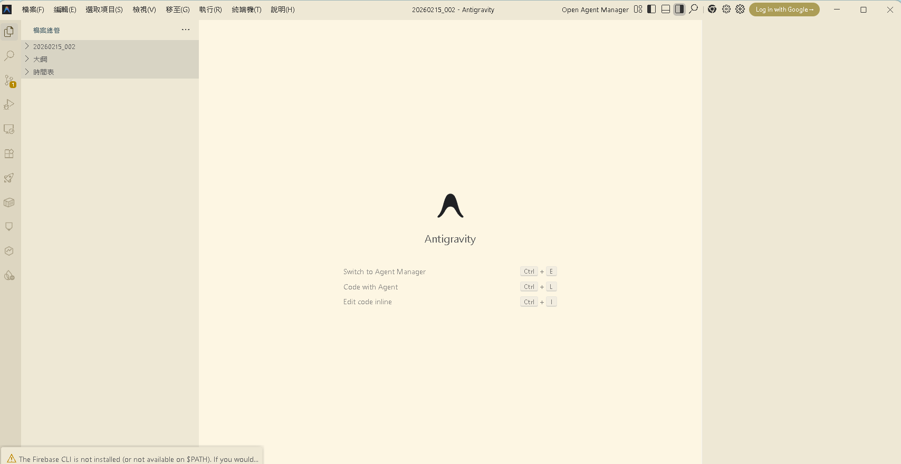
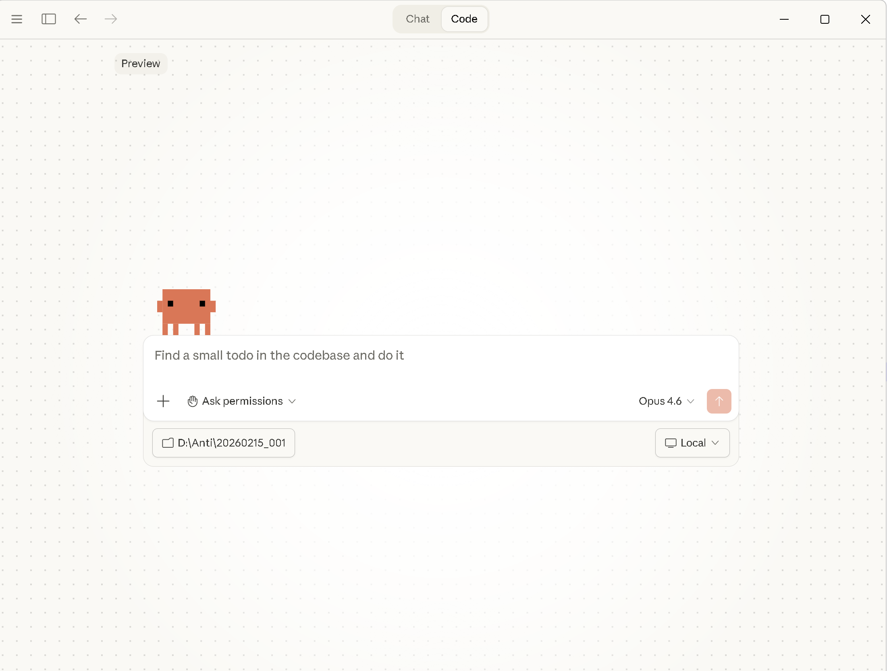
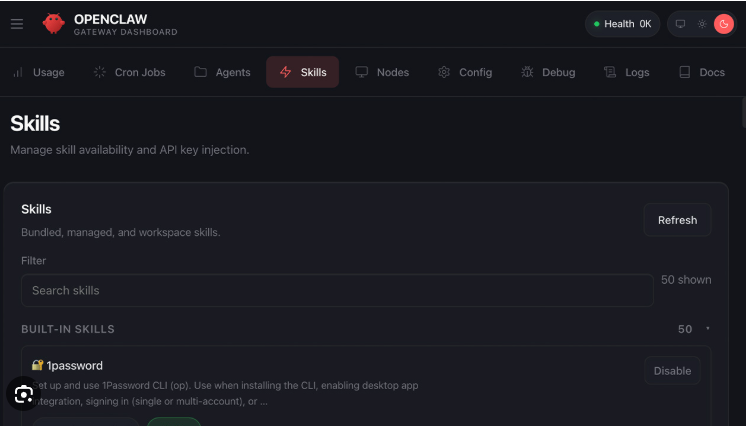
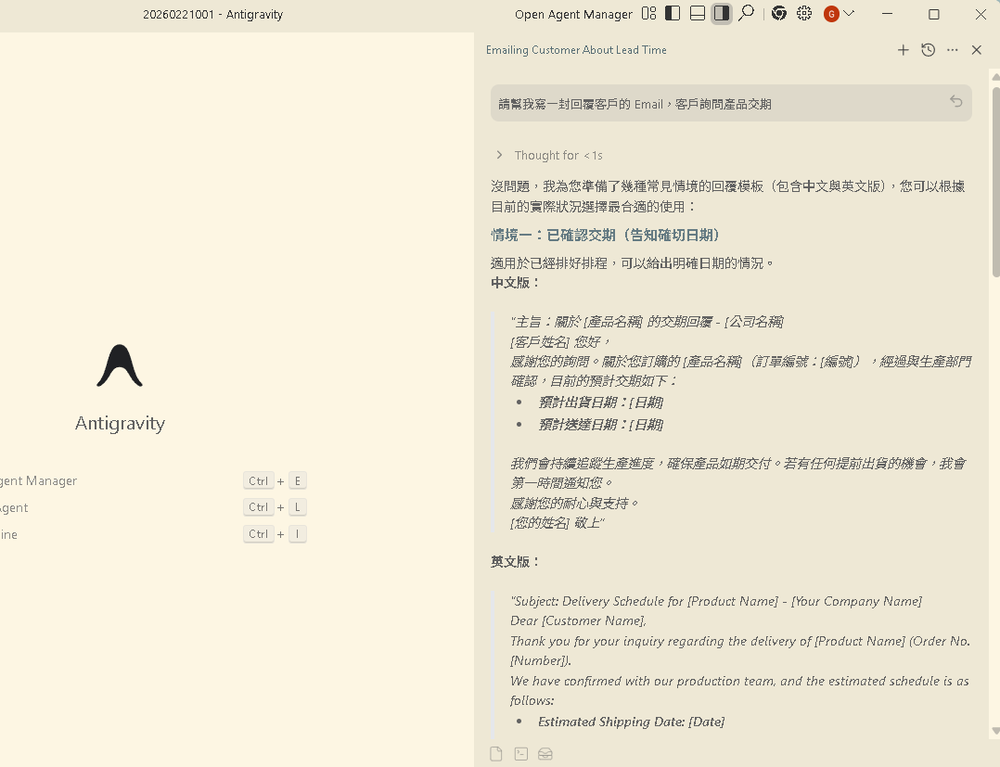
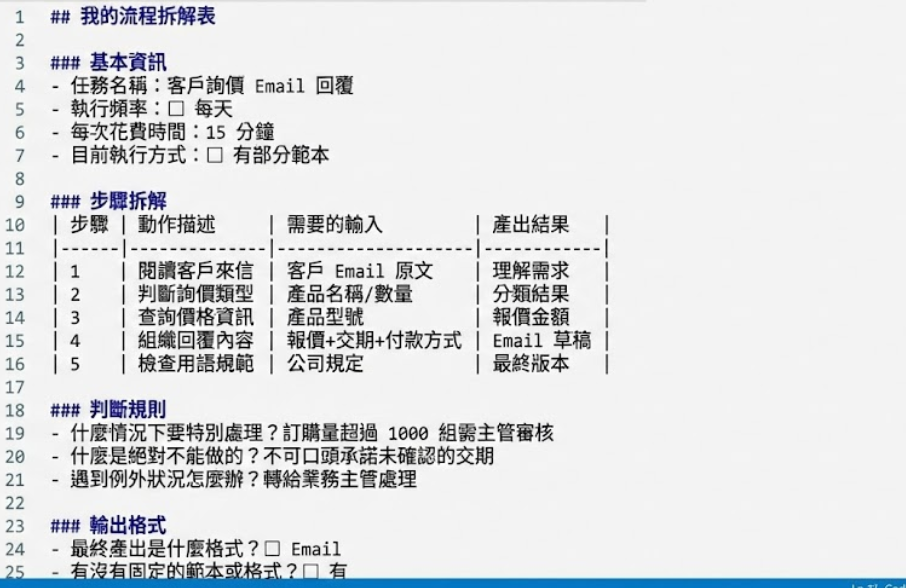
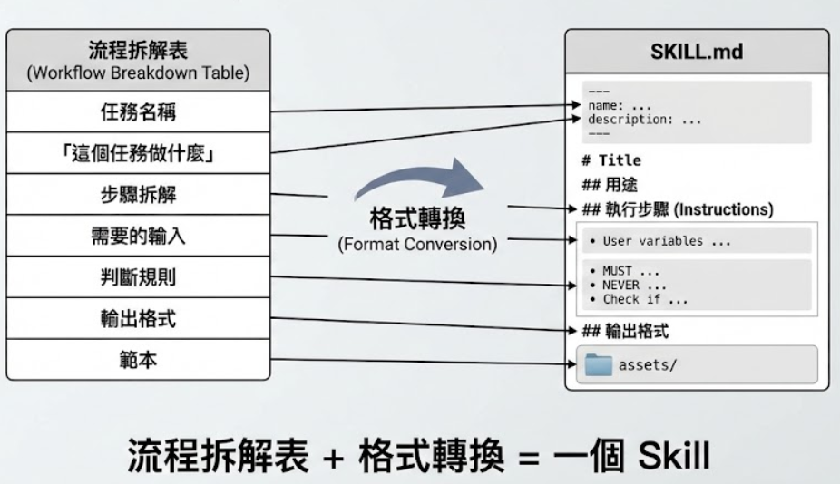

理解 AI Skill 的核心概念，學會把工作流程拆解為可執行的步驟
各位平常用 AI 工作時，有沒有遇過這個情境：你花了 10 分鐘教 AI 怎麼做一件事，結果下次開新對話，又要重新教一遍？
這就好像每次做菜都要重新發明食譜一樣——明明上次已經煮得很好了，為什麼不把步驟寫下來呢？
如果我告訴你，有一種方法可以把你教 AI 的過程「封裝」起來，下次一鍵就能用——這就是 Agent Skills。Skill 就是你寫給 AI 的「標準作業程序（SOP）」，讓 AI 每次都能按照你設定的流程，穩定地完成任務。
| 做菜的食譜 | 對應到 Skill | 說明 |
|---|---|---|
| 食譜名稱 | Skill 名稱 | 例如「Email 回覆助手」「會議記錄整理」 |
| 食材清單 | 輸入參數 | AI 需要你提供什麼資料才能開始工作 |
| 烹飪步驟 | 執行規則 | AI 要依序完成的每一個動作 |
| 成品照片 | 輸出格式 | 最終交付的結果長什麼樣子 |
| 注意事項 | 防呆機制 | 什麼情況該拒絕、什麼錯誤要避免 |
| 比較項目 | 一般 Prompt | Agent Skill |
|---|---|---|
| 保存方式 | 存在聊天紀錄裡，容易遺失 | 獨立的 .md 檔案，永久保存 |
| 觸發方式 | 每次手動貼上或重新打字 | AI 自動偵測相關情境，一鍵載入 |
| 可維護性 | 改了這次，下次又忘記 | 修改檔案即可，所有對話自動生效 |
| 共享性 | 只能截圖或複製文字分享 | 整個資料夾複製即可分享給團隊 |
| 載入效率 | 每次都消耗完整 Token | 按需載入，節省 Token 用量 |
| 擴展性 | Prompt 越長越難維護 | 可拆分多檔案、引用外部資源 |
SKILL.md），不需要寫程式！只要你會打字、會列清單，就能建立自己的 AI Skill。

Agent Skills 採用三層式架構設計，這是一個聰明的「漸進式揭露」機制。AI 不會一次把所有資料都讀進去，而是根據需要逐層載入，大幅節省 Token 消耗。
這就像圖書館的管理方式：書名和簡介放在目錄（快速瀏覽），書的內容放在書架上（需要時才翻閱），參考資料放在資料庫（深入研究時才查詢）。
┌─────────────────────────────────────────────┐
│ 第一層：元資料（~100 tokens） │ ← AI 啟動時就讀取
│ name + description │
├─────────────────────────────────────────────┤
│ 第二層：指令（~500-5000 tokens） │ ← AI 判斷相關時才載入
│ SKILL.md 主體內容 │
├─────────────────────────────────────────────┤
│ 第三層：資源（不限大小） │ ← 按需載入
│ scripts/ references/ assets/ │
└─────────────────────────────────────────────┘包含 Skill 的名稱和簡短描述，大約只有 100 個 Token。AI 在啟動時就會讀取所有 Skill 的元資料，用來判斷「使用者現在的需求跟哪個 Skill 有關」。
這一層就像書的封面和目錄——快速掃描，不花時間。
這就是 SKILL.md 的主體內容，包含執行步驟、輸出格式、安全規則等。大約 500~5000 個 Token。
只有當 AI 判斷「使用者的需求跟這個 Skill 相關」時，才會載入這一層。這就像翻開書本閱讀內容。
包含輔助腳本（scripts/）、參考資料（references/）、範本（assets/）等外部檔案，大小不限。
只有在 Skill 執行過程中需要時才會載入。這就像查閱圖書館的參考資料庫。
CLAUDE.md 每次都完整讀取，Skills 是「用到才載入」，因此你可以建立幾十個 Skill 而不會拖慢 AI。這是 Skills 架構最聰明的地方！
description 要寫得精準，因為 AI 是根據它來判斷是否載入這個 Skill。描述太模糊會導致 AI 錯過你的 Skill，描述太廣泛則可能誤觸發。
目前支援 Agent Skills 的主流平台有三個，各有不同的適用場景。選擇哪個平台取決於你的需求、預算和技術背景。今天的課程會帶你在這三個平台上都實際操作一遍。
| 項目 | Antigravity | Claude Code | Gemini CLI |
|---|---|---|---|
| 費用 | 免費使用 | 付費（需 API Key） | 免費使用 |
| 介面 | 網頁 IDE（圖形化） | 終端機 CLI（命令列） | 終端機 CLI（命令列） |
| Skill 路徑 | .agent/skills/ | .claude/skills/ | 讀取工作區檔案 |
| 安裝需求 | 不需要安裝 | npm install -g @anthropic-ai/claude-code | npm install -g @anthropic-ai/gemini-cli |
| AI 模型 | Claude（Anthropic） | Claude（Anthropic） | Gemini（Google） |
| 特色 | 視覺化操作、適合初學者 | 程式碼能力強、開發者首選 | 自動讀取工作區檔案 |
| 適合誰 | 非技術背景、初次接觸 | 工程師、進階使用者 | Google 生態系使用者 |



讓我們用一個簡單的 Before / After 來感受一下，導入 Agent Skills 前後的差異。這不只是效率的提升，更是工作方式的根本轉變。
想像一下：你是一位客服主管，團隊有 5 個人。每個人回覆客戶信件的風格都不一樣，品質也參差不齊。如果你能把「最佳回覆流程」寫成一個 Skill，讓每個人的 AI 助手都照著做呢？
skills/ 資料夾傳給同事就搞定
把你腦中的專業知識，拆成 AI 看得懂的步驟。這是建立 Skill 最重要的前置作業，也是整個課程的核心技能。
很多人以為「我的工作太複雜，AI 做不來」，其實不是做不來，而是你還沒把流程拆解得夠清楚。任何工作，不管多複雜，都可以拆成一個一個的小步驟。
| 原則 | 說明 | 正確範例 | 錯誤範例 |
|---|---|---|---|
| 足夠具體 | 每一步都可以明確執行，不需要額外猜測 | ✅「分析來信的情緒傾向（正面/中性/負面）」 | ❌「處理一下這封信件」 |
| 有順序性 | 前後步驟有邏輯關聯，不能跳著做 | ✅ 先分析情緒 → 再組織回覆 → 最後檢查語氣 | ❌ 隨便從哪一步開始都行 |
| 可判斷完成 | 每個步驟有明確的產出物，知道做完了沒 | ✅「輸出：情緒判斷結果（正面/中性/負面）」 | ❌「大概看一下就好」 |
以「收到客戶來信後的回覆流程」為例，看看怎麼把日常工作拆解成 AI 可執行的步驟：

上一張投影片我們學會了如何拆解工作流程，現在來看看這些拆解出來的步驟，如何對應到 SKILL.md 的各個段落。這是從「腦中知識」到「可執行檔案」的轉換過程。
SKILL.md 的結構其實就是一份「超級詳細的工作說明書」，每個段落都有明確的用途：
| 你的流程步驟 | 對應 SKILL.md 段落 | 具體內容 |
|---|---|---|
| 這個任務要做什麼？ | ## 用途 |
清楚描述這個 Skill 解決什麼問題、適用什麼場景 |
| 開始前要確認什麼？ | ## 前置檢查 |
使用者需要提供什麼資料？缺少什麼要先問？ |
| 具體怎麼做？ | ## 執行步驟 |
AI 要依序完成的每一個動作，越具體越好 |
| 做完要長什麼樣子？ | ## 輸出格式 |
最終結果的格式、結構、長度等規範 |
| 什麼事情絕對不能做？ | ## 安全規則 |
防呆機制、禁止行為、邊界條件處理 |
| 做一次示範 | ## 範例 |
給 AI 看一個完整的輸入→輸出範例 |
不要寫「幫我處理 Email」，要寫「根據收到的客戶來信，分析情緒和類型，生成符合公司語氣的專業回覆」。越精準，AI 越容易判斷何時該啟用這個 Skill。
用數字編號列出每一步，而且每一步都要有明確的輸出。例如「步驟一：判斷信件類型 → 輸出：類型標籤（詢問/投訴/感謝/合作）」。
告訴 AI 什麼情況要拒絕（例如：「如果來信涉及法律糾紛，回覆『建議諮詢法律顧問』」），避免 AI 在不該回答的地方亂回答。

恭喜你完成 Part 1 的學習！讓我們快速回顧一下這個章節的四個核心概念：
預先寫好的規則檔案（SKILL.md），讓 AI 照著做不誤。不需要寫程式，只要會打字、會列清單就能建立。從此告別「每次重新教 AI」的窘境。
元資料（~100 tokens）→ 指令（~500-5000 tokens）→ 資源（不限大小）。這種漸進式揭露設計，讓你可以建立幾十個 Skill 而不浪費 Token。
Antigravity（免費、圖形化）/ Claude Code（付費、程式碼能力強）/ Gemini CLI（免費、Google 生態系）。三個平台的 Skill 寫法幾乎相同，學會一個就能舉一反三。
把你的專業知識拆成 AI 看得懂的步驟，是建立 Skill 的前置作業。掌握「足夠具體、有順序性、可判斷完成」三原則，任何工作都能轉化為 Skill。